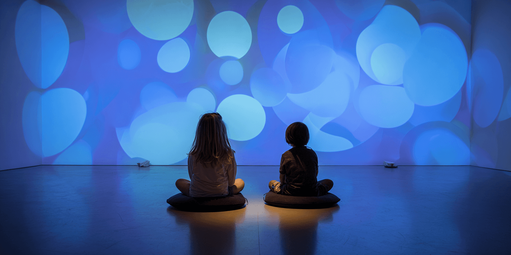
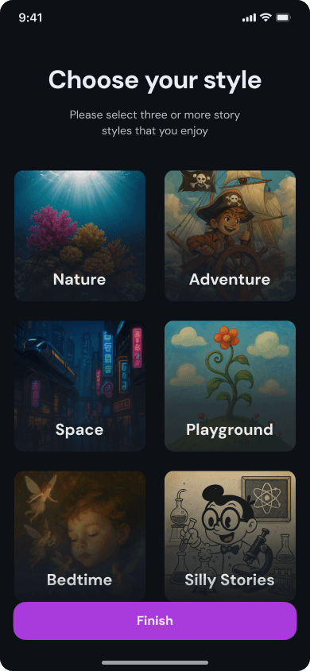

Autism-led
Built from lived experience, not theory, and refined with the autism community.


Burble turns everyday phones, tablets, and TVs into calm, sensory-safe environments. No hardware. No setup. No new routines to learn. Just press play and let the environment do the work.
For home, school & therapy · Learn about who we support
Active deployments stabilizing nervous systems at scale
Built from lived experience, not theory, and refined with the autism community.
A granted-patent methodology for how narrative, visuals, and sound support regulation.
Runs on the phones, tablets, and smart TVs your family or classroom already uses.
After school, during errands, before bed, in the car, or in a waiting room.
Transitions, calming corners, and special education support across the classroom.
Session warm-ups, co-regulation practice, and carry-over between appointments.
Your child doesn't need to be fixed. Their environment needs to work better for their nervous system. That's where Burble began.
Built MDI™ from inside that experience, living with Auditory Processing Disorder, and knowing firsthand what it feels like when the world around you works against your nervous system instead of with it.
Built the platform to make that insight scalable, so the same regulation support that works in a therapy session can follow a child to the classroom, the car, and home without losing the routine they've already settled into.

Use Burble anywhere your child needs calm: after school, during errands, before bed, in the car, or in a waiting room. The same regulation experiences can support home, therapy, and classroom routines.
Give classrooms and clinics a simple regulation tool that runs on devices they already own. Use Burble for transitions, calming corners, special education support, and therapy sessions.
That’s the whole setup. That’s the point.
Burble installs on any phone, tablet, or smart TV your family or classroom already uses. Stream or download experiences for offline regulation on the school bus, in the waiting room, or anywhere Wi‑Fi isn’t.
For rising overwhelm, a withdrawn or shut-down state, or an everyday transition. Each one is designed to meet your child where they are right now, not where you need them to be.

The screen becomes the environment. MDI™ is built to be received, not performed. Slow, predictable, sensory-safe input supports the nervous system directly.
None of them require anything from your child.
Download it today on the App Store and Google Play. One regulation routine that follows a child from home to the classroom to the therapy room.
Post-school decompression, restaurant transitions, or bedtime routines.
Classroom-wide transitions, behavioral referral reduction, and calming sensory corners.
Session warm-ups and transitions, co-regulation practice, and structured carry-over between appointments.
The most common reason children are referred for school disciplinary action isn't academic failure. It's behavioral disruption — which is, almost always, a regulation failure happening upstream.
No infrastructure has existed to address regulation across every environment a child lives in. Until now.
Burble starts where the need is most acute: autistic learners, where the mismatch between nervous system and environment is most visible. Designed for the most complex regulation needs. Built to serve every neurotype.
Sources: CDC MMWR 2025, U.S. Dept. of Education, NIMH, Scientific Reports/Nature 2022.
Story is not decoration. It is functional architecture.
Minimally Defined Immersion (MDI™). A granted-patent methodology governs how narrative, abstract visuals, and sound interact to support nervous system regulation.
MDI™ is a human-built rules architecture with more than a hundred pages of interdependent sensory design rules, refined with the autism community.
Burble's authoring system coordinates narrative, visuals, and sound through embedded MDI™ rules — allowing the story library to scale without compromising the methodology.
Every experience passes a human review gate before publication. Technology makes MDI™ scalable. It does not replace the design intelligence behind it.
One granted patent and three additional filings protect the methodology, adaptive regulation engine, multisensory encoding system, and cross-environment continuity layer.
A competitor can build an engine. They cannot replicate the architecture or how it was built to serve.
Traditional digital media relies on hyper-frequent visual cuts, high-intensity color ranges, and narrative spikes designed to create dopamine loops.
For a neurodivergent or fragile nervous system, this results in profound exhaustion and dysregulation.
Burble works in reverse. By stripping away cognitive tracking, character dialogue, and complex focal shifts, we utilize slow visual pacing and low sensory contrast and ambient sound at frequencies that don't compete for attention.
The result is an environment the nervous system can enter without effort and rest inside.
The moat is the methodology: sensory design rules, software delivery, and cross-environment continuity working as one protected system.
Slow, predictable, sensory-safe. See what your child sees.
“The Burble experience matched perfectly with my son’s vast imagination. At one point, my son was playing a video game and stopped and asked if he could try Burble again. That is rare in my household!”
“Amazing! I enjoyed watching my kids experience it! It was phenomenal to watch their body language as the lights and sounds changed.”
“The story kept my son’s attention. He really loved it.”
“My 12-year-old found it very appealing and the story stuck with him.”
Burble is building a category that didn’t exist before: regulation infrastructure. Explore the research, clinical foundations, and lived experience behind regulation-first design.
Building the infrastructure that enables every nervous system to thrive.